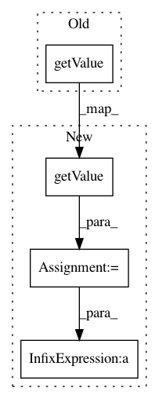

5c7a73df5849b2fbac0778a58646e657461c0c13,osim/env/human.py,GaitEnv,compute_reward,#GaitEnv#,11
Before Change
def compute_reward(self):
obs = self.get_observation()
return self.osim_model.joints[0].getCoordinate(1).getValue(self.osim_model.state)
def is_pelvis_too_low(self):
y = self.osim_model.joints[0].getCoordinate(2).getValue(self.osim_model.state)
return (y < 0.8)
After Change
def compute_reward(self):
obs = self.get_observation()
x = self.osim_model.joints[0].getCoordinate(1).getValue(self.osim_model.state)
delta = self.last_x - x
self.last_x = 0
return delta
def is_pelvis_too_low(self):
In pattern: SUPERPATTERN
Frequency: 3
Non-data size: 4
Instances
Project Name: stanfordnmbl/osim-rl
Commit Name: 5c7a73df5849b2fbac0778a58646e657461c0c13
Time: 2017-01-27
Author: lukasz.kidzinski@gmail.com
File Name: osim/env/human.py
Class Name: GaitEnv
Method Name: compute_reward
Project Name: kermitt2/delft
Commit Name: 8d2a9a6c6affba0d3f88737d497ee1a24b34ac41
Time: 2018-06-26
Author: patrice.lopez@science-miner.com
File Name: sequenceLabelling/reader.py
Class Name: ENAMEXContentHandler
Method Name: startElement
Project Name: stanfordnmbl/osim-rl
Commit Name: 4c8b000bc898a434b9e281c2b07343a81e4f773f
Time: 2016-10-22
Author: lukasz.kidzinski@gmail.com
File Name: python/train.py
Class Name: Environment
Method Name: compute_reward